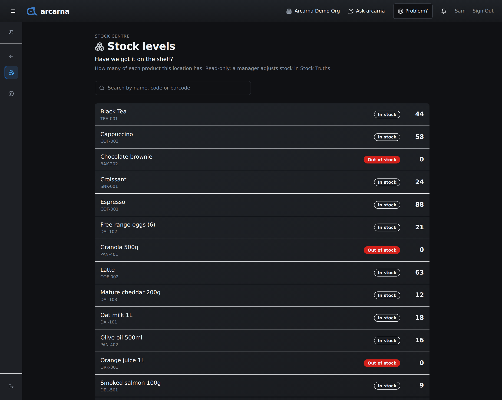
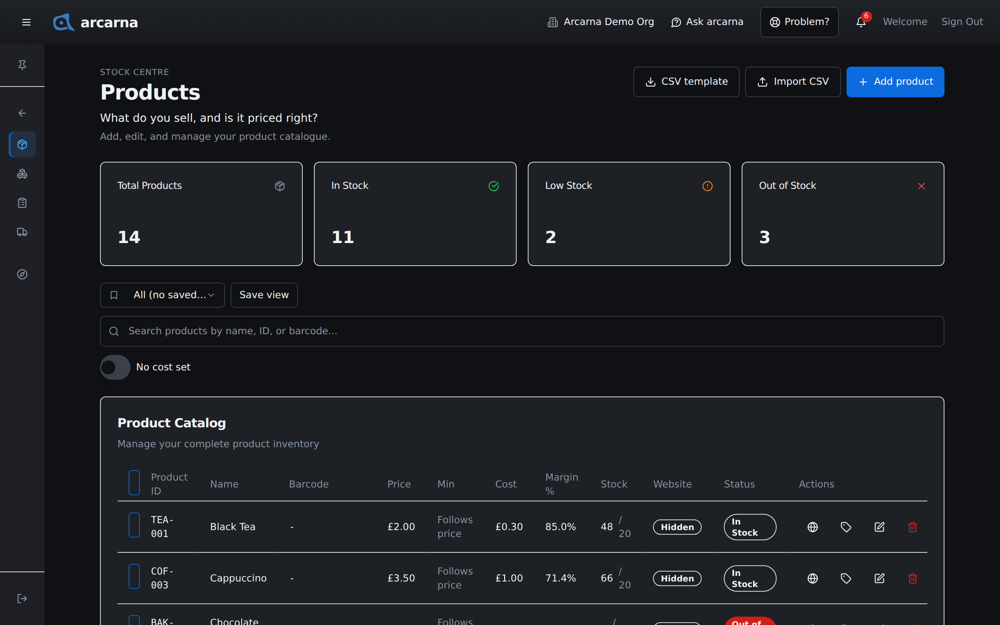
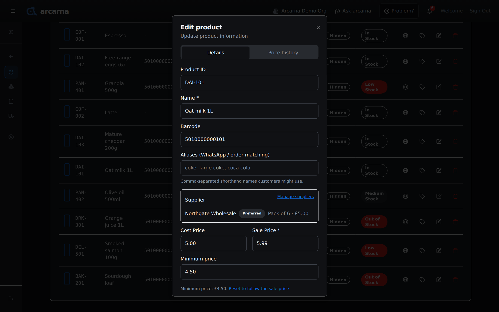
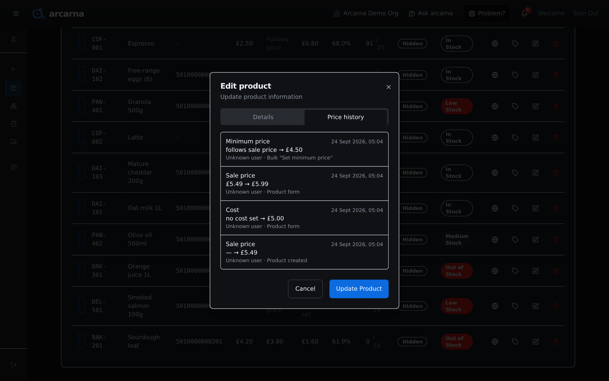
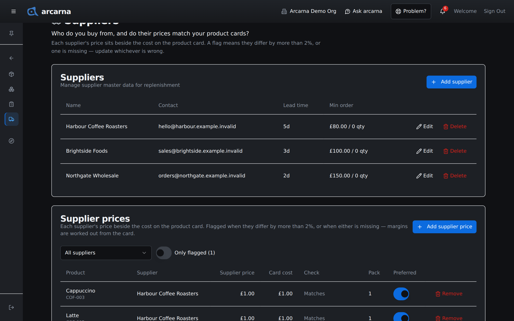

Staff training manual
Staff training manual
What you sell, how much of it is on the shelf, and what it costs to buy. Cashiers use the Stock Centre to check stock levels. Managers also keep the products, prices, minimum prices, suppliers and reorders right here.
Who sees what
One Centre, two views
The Stock Centre looks different depending on your role. A cashier sees one read-only page. Managers see the pages where products are priced and stock is bought, and those pages carry cost prices, which cashiers never see. CASHIER MANAGER
| Page | What it is for | Who |
|---|---|---|
| Stock levels | How many of each product this location has. Read-only, no cost prices. | CASHIER |
| Products | The product list: names, barcodes, sale prices, minimum prices, cost prices and price history. | MANAGER |
| Stock Truths | Stock at each location, adjustments, reorder suggestions, goods receiving and transfers. | MANAGER |
| Purchase Drafts | Reorders being prepared for a supplier. | MANAGER |
| Suppliers | Who you buy from, and whether their prices match the cost on your product records. | MANAGER |
Managers do not see Stock levels in their menu, because Products and Stock Truths already show the same counts.
Stock levels · for everyone
Checking stock levels
Stock levels answers one question: Have we got it on the shelf? It lists every product with how many your location has. It is for checking only. You cannot change anything here, and it shows no cost prices, not even behind the scenes.
- Open the menu, choose Stock Centre, then Stock levels.
- Type in Search by name, code or barcode to find a product. The list narrows as you type.
- Read the badge and the number on the right of each product.
| Badge | What it means |
|---|---|
| In stock | There is enough on the shelf. |
| Running low | Down to 30% or less of the level the shop normally keeps. Worth telling a manager. |
| Out of stock | None left at this location. |

Minimum prices and the till
Each product has a minimum price: the lowest price it should normally be sold for. Until a manager sets one, it is simply the sale price. You never see cost prices, and the till never stops you selling. If you sell below the minimum, the sale goes through and is recorded quietly so it can be looked at later. If your shop has switched on the price guard, the order also shows an amber line with the lowest price and asks for a reason at payment. Section 3 explains both.
Products · for managers
The Products page MANAGER
Products answers: What do you sell, and is it priced right? Across the top, four counts: Total Products, In Stock, Low Stock and Out of Stock. Below them is the search box, Search products by name, ID, or barcode..., and the product list.
| Column | What it shows |
|---|---|
| Product ID, Name, Barcode | How the product is found at the till and on labels. |
| Price | The sale price. |
| Min | The minimum price, or Follows price when none is set. |
| Cost | What one unit costs you to buy, or No cost set. |
| Margin % | The share of the sale price left after cost. A dash when the cost is not known. |
| Stock | How many you have at this location, then the Stock Limit after the slash. |
| Website | Online or Hidden on your web shop. |
| Status | In Stock, Medium Stock, Low Stock or Out of Stock. |
| Actions | Edit the website listing (globe), print a product label (name, price and barcode, never cost), edit, and delete. |
The buttons at the top are CSV template and Import CSV, for adding many products from a spreadsheet, and Add product.
Admins also see a Would have flagged button at the top of the page. It opens the list of the sales that went below the minimum price or below cost. Every such sale is recorded there quietly, and no sale is stopped (Section 9).

Adding or editing a product
- Select Add product, or the pencil on a product's row.
- Fill in Name * and Sale Price *. They are the only required fields. Product ID and Barcode help find it at the till.
- Aliases (WhatsApp / order matching) takes other names customers use, separated by commas, for example "coke, large coke".
- Enter Cost Price if you know it (see When you do not know the cost below), and the Minimum price if you want one (see the next part).
- Stock sets the count at this location only. Stock Limit is the level you normally keep, which decides when the product counts as running low.
- When editing, the Supplier box lists who you buy it from, with Manage suppliers to change that. With no supplier, a reorder cannot be raised for it.
- Select Update Product (or Create Product, when adding).
Products · minimum price
Setting a minimum price
The minimum price is the lowest price a product should normally go for. It exists so that underpriced sales can be spotted, not to stop them: the till never refuses a sale below it. Cashiers see it only as "lowest £…" when the price guard is on.
A new product has no minimum of its own. It follows the sale price, so if you change the sale price, the minimum moves with it and never goes out of date. Under the box you see Minimum price: follows sale price (£5.99).
| You want to… | Do this |
|---|---|
| Allow a little room below the sale price | Type a figure in Minimum price, for example £4.50. The line underneath changes to Minimum price: £4.50. |
| Go back to following the sale price | Select Reset to follow the sale price, or clear the box. |
| Allow any price | Type 0. A £0 minimum is a real minimum and means any price is acceptable. |
- Above the sale price is refused. arcarna says so in red and will not save it. Lower the minimum or clear it.
- Below the cost gets a warning. This is below the known cost (£5.00). A sale at the minimum would lose money. You can still save it.
- Lowering the sale price below the minimum brings up Lower the minimum too?, with Lower it to £…, Follow the sale price and Keep editing.

Setting the minimum on many products at once
- Tick the products in the list. A bar appears at the bottom of the screen.
- Select Set minimum price in the bar.
- Choose a Rule: Follow the sale price, Sale price − x%, Cost + x% or A fixed £, and type the figure.
- Select Preview. Nothing has changed yet. The table shows each product's Sale price, Min now and New min.
- Rows marked Skipped: No cost set or Skipped: Would be above the sale price will be left alone.
- Select Apply to … products.
Products · cost
When you do not know the cost
The cost price is what one unit costs you to buy. arcarna uses it for margins, profit and the supplier price check. If you do not know it yet, leave Cost Price blank. Do not type 0 to fill the gap.
| Cost Price | How arcarna treats it |
|---|---|
| A figure, such as £5.00 | A known cost. Used for margin, profit and the supplier check. |
| Blank | Not known. Shows as No cost set, with a dash for margin, and the product is left out of margin figures rather than guessed. |
| £0 | Also treated as not known, and also shown as No cost set. arcarna never counts a product as costing nothing, because that would make its margin look like 100%. |
To find the products with no cost, turn on the No cost set switch beside the search box. The number of products it finds appears next to it. Filling these in makes every margin and profit figure more complete.
Products · price history
Price history
Every change to a product's sale price, minimum price or cost is kept. To see them, open the product with the pencil and choose the Price history tab. The newest change is at the top.
| Each entry shows | Example |
|---|---|
| What changed, and when | Minimum price · 12 Sept 2026, 10:14 |
| The old and new figures | follows sale price → £4.50. A blank cost reads "no cost set". |
| Who, and how | The person's name, then Product form, Import, Product created or Bulk "Set minimum price". |
A product with no changes yet reads No price changes recorded yet.

Stock Truths
Adjusting stock MANAGER
Stock Truths answers What's in stock, and what's running out? Its tabs are Stock levels, Smart Stock, Replenishment, Receiving and Transfers.
- On the Stock levels tab, choose My location (you cannot adjust while viewing All locations (total)).
- On the product's row, select Add to add to the count (for example a delivery you counted in), or Set to replace it after a stock count.
- Type the amount and select Confirm.
Replenishment suggests what to reorder from how fast each product sells. Why? on a suggestion explains it. Purchase draft starts a reorder from a suggestion, and Transfer draft moves stock from another location. A product with no supplier shows No supplier mapped — add one instead.
Buying stock
Purchase Drafts
Purchase Drafts answers What do you need to reorder? A purchase draft is a reorder you are preparing for one supplier. arcarna never orders or pays for anything by itself: you send the purchase order to the supplier yourself, and stock only goes up when the goods are received.
Drafts are created from Replenishment in Stock Truths, grouped by supplier. Select View on a draft to open it. The status is shown at the top, with a line explaining what it means.
| Status | What it means and what to do |
|---|---|
| draft | Internal only. Check the quantities, then select Mark reviewed. |
| reviewed | Ready for approval. Mark approved, or Back to draft to change the quantities. |
| approved | Select Export PO for a purchase order to send to the supplier. When the goods arrive, select Receive goods. |
| partially_received | Some lines have arrived. Receive the rest when they come. |
| fully_received | Everything ordered has arrived. Read-only. |
| cancelled | Nothing can be received against it. Mark cancelled is available until the goods are all in. |
- When the delivery arrives, open the draft and select Receive goods.
- Enter Qty received and any Damaged for each line, and the Supplier reference (optional) from their delivery note.
- Select Create pending receipt.
- Complete the receipt on the Receiving tab in Stock Truths. Only then does the stock go up.
CSV downloads the draft's lines, and Delete draft removes a draft you no longer need.
Buying stock · suppliers
Suppliers
Suppliers answers Who do you buy from, and do their prices match your product cards? It has two parts.
The supplier list
Each supplier's Name, Contact, Lead time (days from order to delivery) and Min order. Select Add supplier, fill in Name *, Lead time (days) and Min order value (£), then Save. Deleting a supplier deactivates it, so its history stays.
Supplier price and cost price
These are two different figures, and the page puts them side by side:
| Figure | What it is |
|---|---|
| Supplier price | What this supplier charges you for the product. It is what goes on purchase orders. |
| Card cost | The Cost Price on the product in Products. It is what every margin and profit figure is worked out from. |
The Check column compares them. It reads Matches, or is flagged when they differ by more than 2% (for example +4.5% vs card), or when one is missing (No supplier price, No cost on card). A flag means one of the two is out of date. Find out which is right and update the other: select the product's name to open it in Products, or edit the supplier price here.
- To add or change a supplier's price, select Add supplier price.
- Choose the Product and Supplier. Supplier price (£) fills in with the product's own Cost Price as a starting point — change it if this supplier charges differently. Add the Supplier's code if you have it.
- Switch on Preferred supplier if this is who you normally buy it from. Reorders use the preferred supplier.
- Select Save.
Turn on Only flagged to see just the prices that need a look. The number beside it says how many there are.
